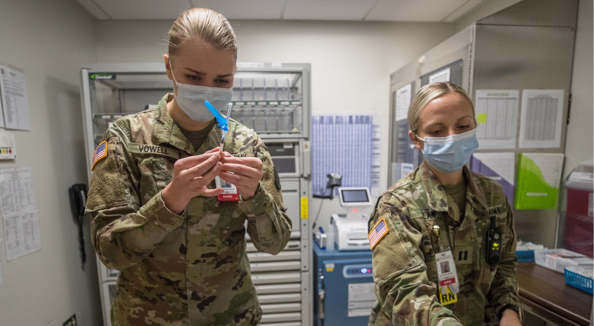
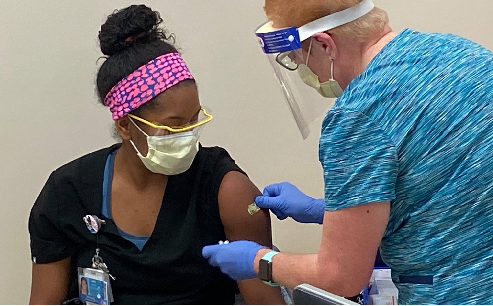

Coronavirus 2019
March 16, 2018 | Posted by Owner | Filed under templates, internet

La pandémie de Covid-19 Écouter est une pandémie d'une maladie infectieuse émergente, appelée la maladie à coronavirus 2019 ou Covid-19, provoquée par le coronavirus SARS-CoV-2, apparue à Wuhan le 17 novembre 2019, dans la province de Hubei (en Chine centrale), avant de se propager dans le monde.
L'Organisation mondiale de la santé (OMS) alerte dans un premier temps la République populaire de Chine et ses autres États membres, puis prononce l'état d'urgence de santé publique de portée internationale le 30 janvier 2020.
Chronologie de la pandémie de Covid-19
March 15, 2010 | Posted by Owner | Filed under templates, internet

Article détaillé : Chronologie de la pandémie de Covid-19.
Depuis l'apparition du SRAS puis du MERS, une nouvelle pandémie à coronavirus était attendue et annoncée par divers experts du domaine (ex. : Hung en 2013)[6].
Selon des études phylogénétiques, la maladie est apparue entre octobre et décembre 2019[7], et plus précisément à la fin du mois de novembre[8],[9].
Le premier patient diagnostiqué (le patient zéro) est identifié le 1er décembre 2019[10] dans la province du Hubei, en Chine centrale. Il est âgé de 70 ans environ, sort peu de chez lui et n'a pas fréquenté le marché de Wuhan ; il est atteint de la maladie d'Alzheimer[11],[12].
Le 16 décembre 2019 est repérée la première hospitalisation[13].
L'Organisation mondiale de la santé (OMS) alerte dans un premier temps la République populaire de Chine et ses autres États membres[14], puis prononce l'état d'urgence de santé publique de portée internationale le 30 janvier[14].
Le 13 janvier 2020, un premier cas est découvert hors de Chine continentale. Deux navires de croisière (le MS Westerdam et le Diamond Princess) sont aussi touchés. Le nombre total de malades hors de la Chine dépasse les 1 500 à la mi-février.
À partir de janvier 2020, le gouvernement chinois met en œuvre des procédures de confinement, et place plusieurs villes puis toute une région en quarantaine, fermant de nombreux sites publics et déployant des moyens sanitaires.
La situation épidémiologique évolue constamment, mais les données sur le virus et la Covid-19[22] ont rapidement été partagées par les chercheurs, dès le 5 janvier[23], et moins d'une semaine après identification du virus. La première prépublication apparaît deux semaines après la déclaration, le 19 janvier[24].
Diverses revues et éditeurs scientifiques (ex. : The Lancet, qui a créé un hub dédié), Nature, Elsevier… ont mis à disposition des chercheurs et médecins, voire du grand public, leurs ressources (articles de revues ; manuels scientifiques et médicaux, les produits éducatifs…) ; Elsevier a créé à partir des données de Scopus une carte mondiale interactive d'experts ; et il autorise désormais l'exploration (en texte intégral) de ses données qui croissent exponentiellement depuis la fin 2019, dont via PubMed Central des NIH et la base de données OMS, « gratuitement, et sans limitations de copyright ». Elsevier et The Lancet ont signé la déclaration du Wellcome Trust, sur le partage, ouvert et rapide, des données et résultats de recherche sur la pandémie, afin d'aider à la riposte de santé publique et à sauver des vies[réf. nécessaire].